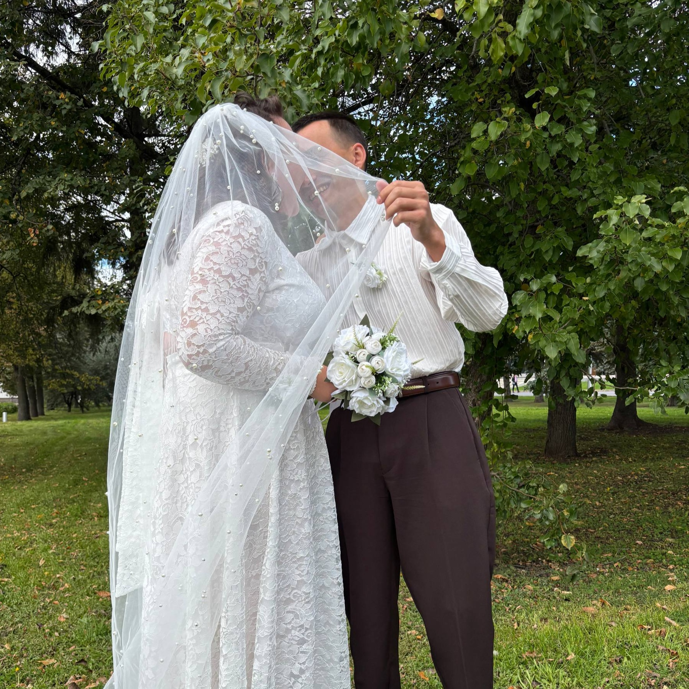
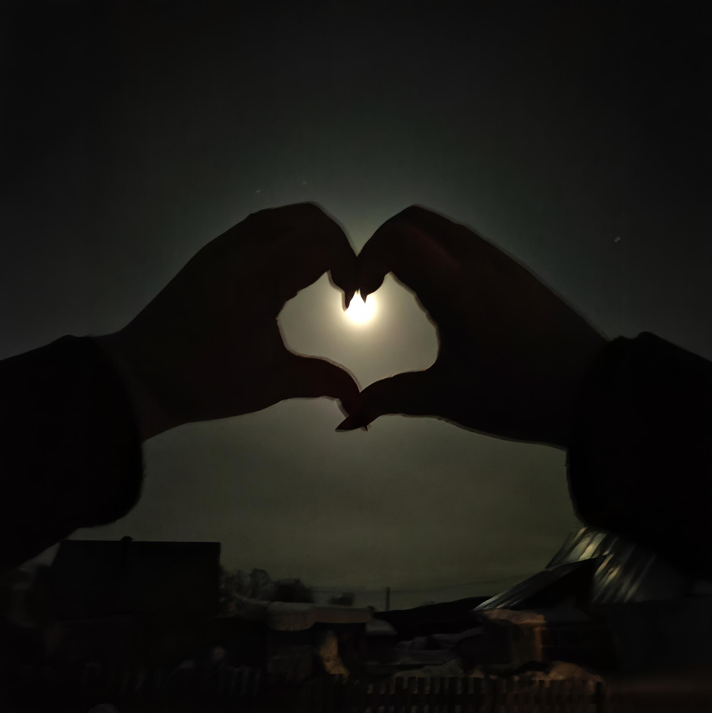
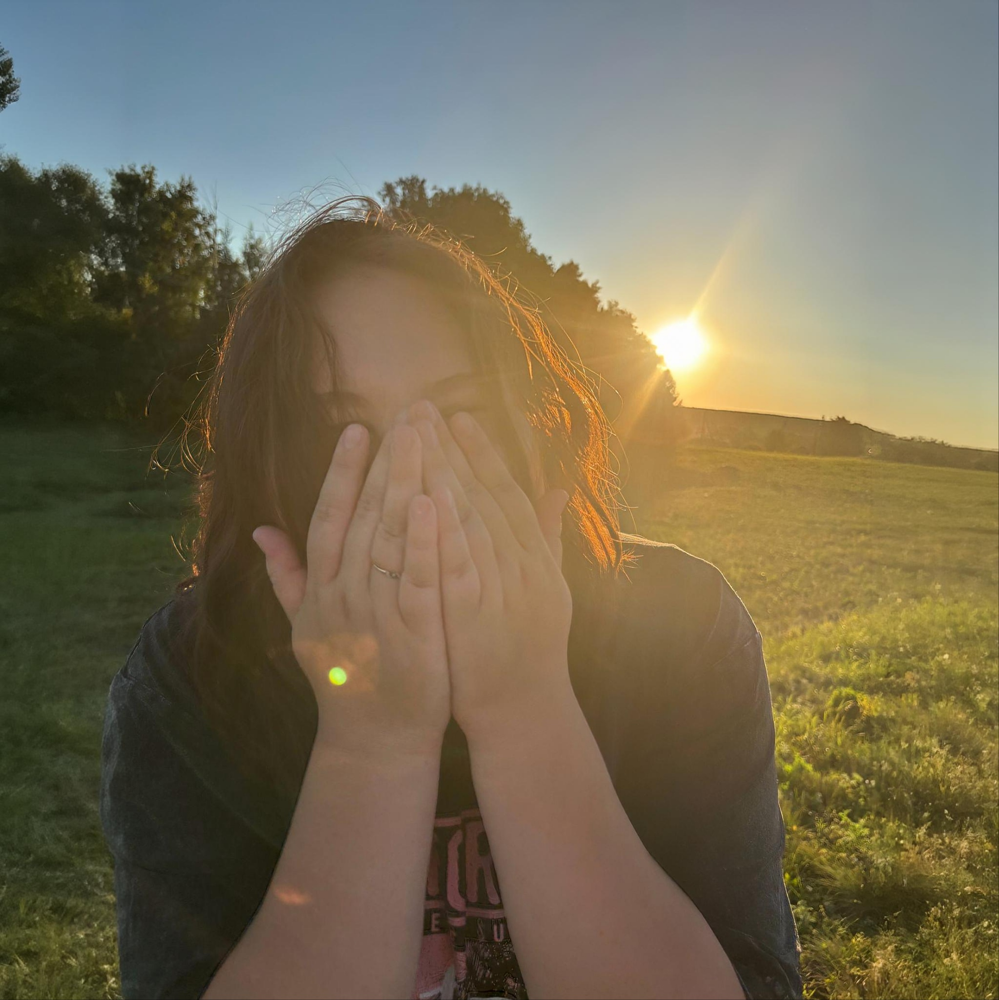

С днём рождения, моя волшебница

Фата, листва, наши счастливые глаза. Вот она — самая чистая магия.

Тот вечер, когда ты научила меня видеть звёзды иначе. Навсегда в сердце.

Глаза цвета леса, шёпот счастья — и мир вокруг оживает.
Моя любимая, самая таинственная и нежная колдунья... С того самого дня, как ты перевернула мою реальность, я живу в твоём волшебстве. Ты умеешь зажигать свет там, где тьма, и превращать обычный день в праздник. Спасибо за твои зелья (самый вкусный чай в мире), за шёпот на ухо, за то, как смеёшься, когда я делаю что-то нелепое. ❤️
С каждым днём я люблю тебя сильнее — это моя самая сильная магия. Ты — целая вселенная. Обещаю всегда быть рядом, поддерживать твои ритуалы, радовать и любить так, как ты заслуживаешь.
"Что не имеет ключа, но открывает душу? Что растёт от каждого взгляда и не боится ни одного заклинания?"
✨ кликни, чтобы увидеть ответ ✨